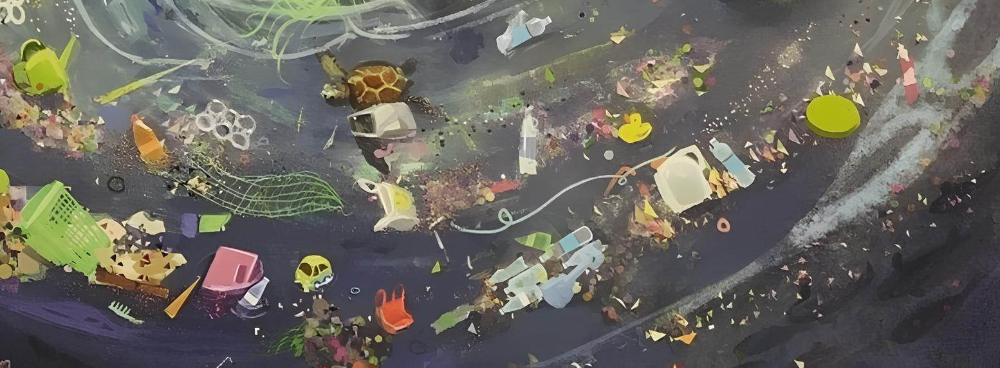

- Pengembangan Energi Terbarukan: Pemanfaatan inovasi seperti panel surya dan turbin angin mengurangi ketergantungan manusia pada bahan bakar fosil penyebab polusi.
- Efisiensi dan Kendaraan Listrik: Penggunaan kendaraan bertenaga listrik membantu menurunkan tingkat polusi udara secara signifikan di perkotaan.
- Pengelolaan Limbah dan Daur Ulang: Sistem modern memudahkan proses daur ulang sampah rumah tangga maupun industri serta mendukung konsep ekonomi sirkular.
- Pemantauan Ekosistem: Penggunaan sensor, pencitraan satelit, dan analisis data membantu deteksi dini kerusakan hutan, polusi udara, serta mitigasi bencana alam.
Emisi Gas Rumah Kaca: Kendaraan bermotor dan pabrik mengeluarkan gas berbahaya seperti karbon dioksida (CO₂) yang memicu pemanasan global.
Limbah Elektronik (E-Waste): Perangkat seperti ponsel dan komputer yang cepat usang menjadi sampah beracun yang sulit diurai serta mencemari tanah dan air.
Sumber Daya Alam: Pembuatan alat canggih membutuhkan mineral langka seperti nikel, kobalt, dan litium yang penambangannya merusak hutan serta habitat hewan.
Konsumsi Energi Tinggi: Pusat data (data center) dan server internet membutuhkan pasokan listrik yang sangat besar, di mana sebagian besar masih bersumber dari bahan bakar fosil.
Konsumsi Listrik yang Masif: Proses melatih (training) dan menjalankan model AI membutuhkan daya komputasi tinggi dari ribuan server di pusat data (data center) yang menyala 24 jam. Satu kueri ke chatbot AI bisa memakan listrik jauh lebih banyak daripada pencarian web biasa.
Jejak Karbon Tinggi: Sebagian besar pasokan listrik untuk pusat data masih berasal dari pembangkit listrik berbahan bakar fosil, sehingga menghasilkan emisi gas rumah kaca yang memperparah perubahan iklim.Boros Air Bersih: Server komputer yang bekerja keras menghasilkan panas ekstrem dan membutuhkan pendingin berskala besar. Sistem pendingin ini menghabiskan jutaan liter air setiap hari dan mengurangi ketersediaan air bersih.
Tambang & Limbah Elektronik: Pembuatan cip canggih (GPU/TPU) memerlukan penambangan mineral langka yang merusak alam. Selain itu, perkembangan AI yang sangat cepat membuat perangkat keras cepat usang dan memicu lonjakan limbah elektronik (e-waste).